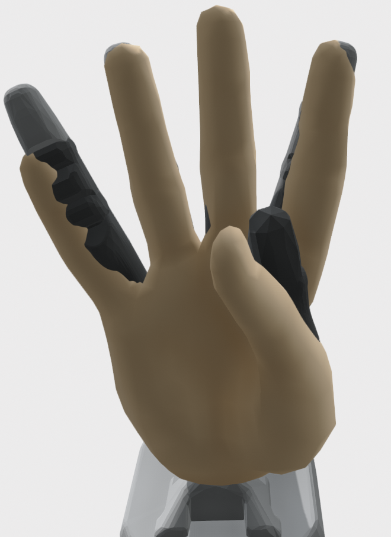

Embodiment¶
Visualizations¶
There are several scripts that visualize aspects of the record and embodiment mapping.
Record Mapping¶
Script: bin/vis_markers_to_mano_trajectory.py
Example calls:
python bin/vis_markers_to_mano_trajectory.py --demo-file data/Qualisys_pnp/20151005_r_AV82_PickAndPlace_BesMan_labeled_02.tsv --mocap-config examples/config/markers/20151005_besman.yaml --mano-config examples/config/mano/20151005_besman.yaml
python bin/vis_markers_to_mano_trajectory.py --demo-file data/QualisysAprilTest/april_test_005.tsv
python bin/vis_markers_to_mano_trajectory.py --demo-file data/20210610_april/Measurement2.tsv --mocap-config examples/config/markers/20210610_april.yaml --mano-config examples/config/mano/20210610_april.yaml
python bin/vis_markers_to_mano_trajectory.py --demo-file data/20210616_april/Measurement16.tsv --mocap-config examples/config/markers/20210616_april.yaml --mano-config examples/config/mano/20210610_april.yaml --visual-objects insole
python bin/vis_markers_to_mano_trajectory.py --demo-file data/20210701_april/Measurement30.tsv --mocap-config examples/config/markers/20210616_april.yaml --mano-config examples/config/mano/20210610_april.yaml --visual-objects insole
Examples:
 |
|||
Record and Embodiment Mapping¶
{kind=link}
Trajectory¶
Script: bin/vis_markers_to_robot.py
Example calls:
python bin/vis_markers_to_robot.py shadow --demo-file test/data/recording.tsv --mocap-config examples/config/markers/20210826_april.yaml --mano-config examples/config/mano/20210610_april.yaml --record-mapping-config examples/config/record_mapping/20211105_april.yaml --visual-objects pillow-small --show-mano
python bin/vis_markers_to_robot.py mia --demo-file test/data/recording.tsv --mocap-config examples/config/markers/20210826_april.yaml --mano-config examples/config/mano/20210610_april.yaml --record-mapping-config examples/config/record_mapping/20211105_april.yaml --visual-objects pillow-small --mia-thumb-adducted --show-mano
python bin/vis_markers_to_robot.py mia --demo-file data/Qualisys_pnp/20151005_r_AV82_PickAndPlace_BesMan_labeled_02.tsv --mocap-config examples/config/markers/20151005_besman.yaml --mano-config examples/config/mano/20151005_besman.yaml
python bin/vis_markers_to_robot.py mia --demo-file data/QualisysAprilTest/april_test_005.tsv
python bin/vis_markers_to_robot.py mia --demo-file data/20210610_april/Measurement2.tsv --mocap-config examples/config/markers/20210610_april.yaml --mano-config examples/config/mano/20210610_april.yaml --mia-thumb-adducted
python bin/vis_markers_to_robot.py mia --mocap-config examples/config/markers/20210616_april.yaml --mano-config examples/config/mano/20210616_april.yaml --show-mano --demo-file data/20210616_april/Measurement24.tsv --mia-thumb-adducted
python bin/vis_markers_to_robot.py mia --mocap-config examples/config/markers/20210616_april.yaml --mano-config examples/config/mano/20210616_april.yaml --demo-file data/20210701_april/Measurement30.tsv --visual-objects insole --mia-thumb-adducted
python bin/vis_markers_to_robot.py mia --mocap-config examples/config/markers/20210819_april.yaml --mano-config examples/config/mano/20210616_april.yaml --demo-file data/20210819_april/20210819_r_WK37_insole_set0.tsv --visual-objects insole --show-mano --mia-thumb-adducted
python bin/vis_markers_to_robot.py shadow --mocap-config examples/config/markers/20211105_april.yaml --mano-config examples/config/mano/20210616_april.yaml --demo-file data/20210819_april/20210819_r_WK37_insole_set0.tsv --visual-objects insole --show-mano
python bin/vis_markers_to_robot.py mia --mocap-config examples/config/markers/20210826_april.yaml --mano-config examples/config/mano/20210610_april.yaml --demo-file data/20210826_april/20210826_r_WK37_small_pillow_set0.tsv --record-mapping-config examples/config/record_mapping/20211105_april.yaml --show-mano --mia-thumb-adducted --visual-objects pillow-small
python bin/vis_markers_to_robot.py shadow --mocap-config examples/config/markers/20211105_april.yaml --mano-config examples/config/mano/20210610_april.yaml --record-mapping-config examples/config/record_mapping/20211105_april.yaml --demo-file data/20211105_april/20211105_r_WK37_electronic_set0.tsv --show-mano --visual-objects electronic-object electronic-target
python bin/vis_markers_to_robot.py shadow --mocap-config examples/config/markers/20211112_april.yaml --mano-config examples/config/mano/20210610_april.yaml --record-mapping-config examples/config/record_mapping/20211105_april.yaml --demo-file data/20211112_april/20211112_r_WK37_passport_set0.tsv --show-mano --visual-objects passport
Segment¶
Script: bin/vis_segment_markers_to_robot.py
Example calls:
python bin/vis_segment_markers_to_robot.py mia close --mocap-config examples/config/markers/20210616_april.yaml --mano-config examples/config/mano/20210616_april.yaml --demo-file data/20210616_april/metadata/Measurement24.json --segment 0
python bin/vis_segment_markers_to_robot.py mia close --mocap-config examples/config/markers/20210616_april.yaml --mano-config examples/config/mano/20210701_april.yaml --mia-thumb-adducted --demo-file data/20210701_april/Measurement30.json --segment 0 --visual-objects insole
python bin/vis_segment_markers_to_robot.py mia close --mocap-config examples/config/markers/20210819_april.yaml --mano-config examples/config/mano/20210701_april.yaml --mia-thumb-adducted --demo-file data/20210819_april/20210819_r_WK37_insole_set0.json --segment 0 --visual-objects insole
python bin/vis_segment_markers_to_robot.py mia close --mocap-config examples/config/markers/20210826_april.yaml --mano-config examples/config/mano/20210701_april.yaml --mia-thumb-adducted --demo-file data/20210826_april/20210826_r_WK37_small_pillow_set0.json --segment 0 --visual-objects pillow
python bin/vis_segment_markers_to_robot.py shadow flip --mocap-config examples/config/markers/20211112_april.yaml --mano-config examples/config/mano/20211105_april.yaml --demo-file data/20211112_april/20211112_r_WK37_passport_set0.json --visual-objects passport --show-mano --segment 0
python bin/vis_segment_markers_to_robot.py mia close --mocap-config examples/config/markers/20211119_april.yaml --mano-config examples/config/mano/20211105_april.yaml --mia-thumb-adducted --demo-file data/20211119_april/20211119_r_WK37_insole_set0.json --segment 0 --visual-objects insole
python bin/vis_segment_markers_to_robot.py mia insert --mocap-config examples/config/markers/20211217_april.yaml --mano-config examples/config/mano/20211105_april.yaml --mia-thumb-adducted --show-mano --demo-file data/20211217_april/20211217_r_WK37_passport_box_set0.json --segment 0 --visual-objects passport-closed
python bin/vis_segment_markers_to_robot.py mia close --mocap-config examples/config/markers/20220328_april.yaml --mano-config examples/config/mano/20211105_april.yaml --show-mano --demo-file data/20220328_april/20220328_r_WK37_insole_lateral_front_set0.json --segment 0 --visual-objects insole
python bin/vis_segment_markers_to_robot.py mia close --mocap-config examples/config/markers/20220328_april.yaml --mano-config examples/config/mano/20211105_april.yaml --show-mano --demo-file data/20220328_april/20220328_r_WK37_insole_pinch_front_set0.json --segment 0 --visual-objects insole --mia-thumb-adducted
Interactive Embodiment Mapping¶
Script: bin/gui_robot_embodiment.py
|  | |||
File Conversion¶
In order to convert a motion capture file to a trajectory that can be
executed by a robotic hand, you have to run the script
bin/convert_hand_trajectory.py. All scripts can be executed with the
option -h to see available options. Note that it is possible and
recommended for known objects to convert end-effector poses to object
frames. This can be done with the option --base-frame.
Example calls:
python bin/convert_hand_trajectory.py mia data/QualisysAprilTest/april_test_009.tsv --mia-thumb-adducted --output trajectory_009.csv
python bin/convert_hand_trajectory.py mia data/20220718_april/OSAI_test2.txt --mia-thumb-adducted --mocap-config examples/config/markers/20220718_april.yaml --mano-config examples/config/mano/20220718_april.yaml --robot-config examples/config/robot/20220718_april_mia.yaml --output OSAI_test2.csv
Visualize Converted Files¶
The script produces CSV files. You can visualize resulting trajectories
with bin/vis_embodied_trajectories.py. Here are two examples of
visualizations created with this script:
{kind=link}
{kind=link}
Example call:
python bin/vis_embodied_trajectories.py ../motion_capture_grasp_poses/datasets/insole/*.csv --artist insole